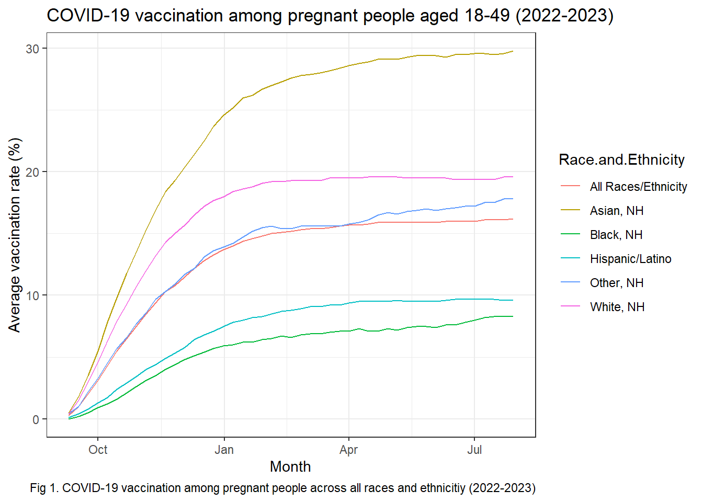
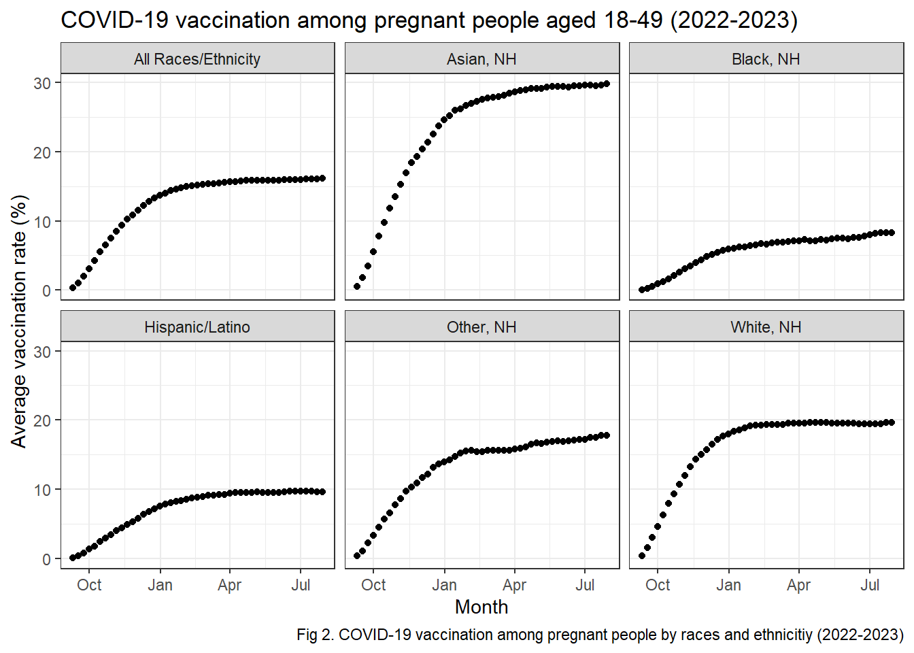
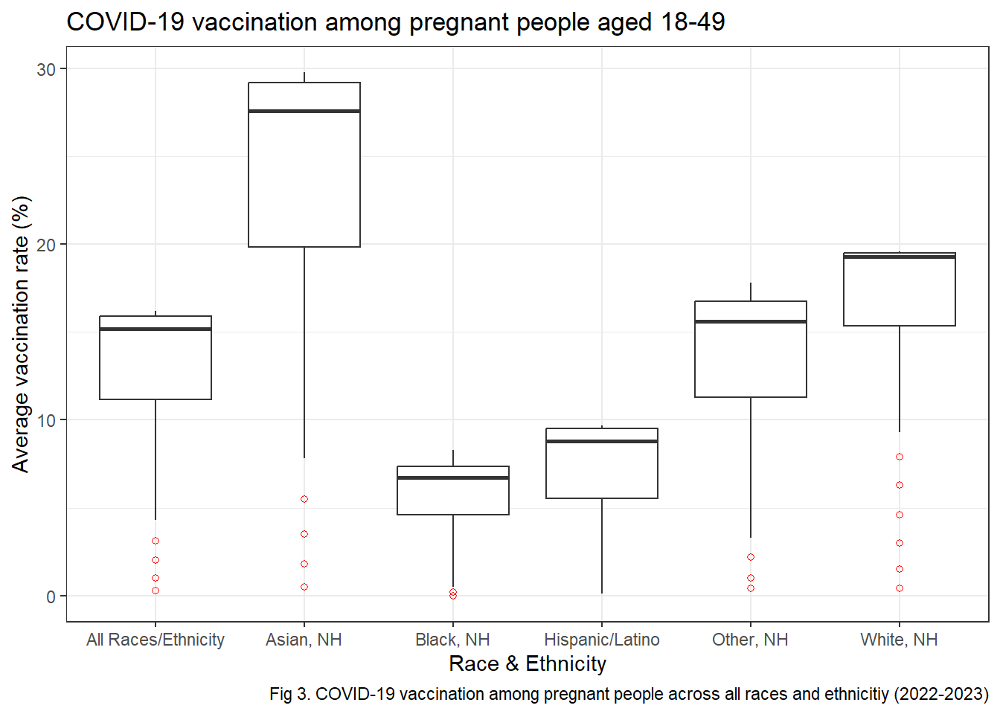
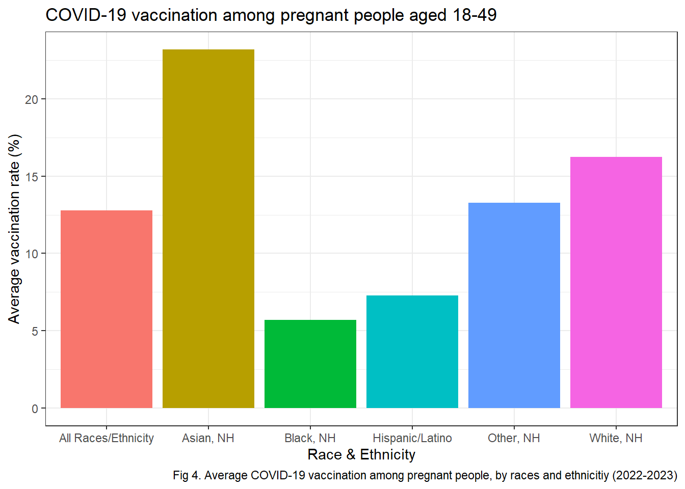
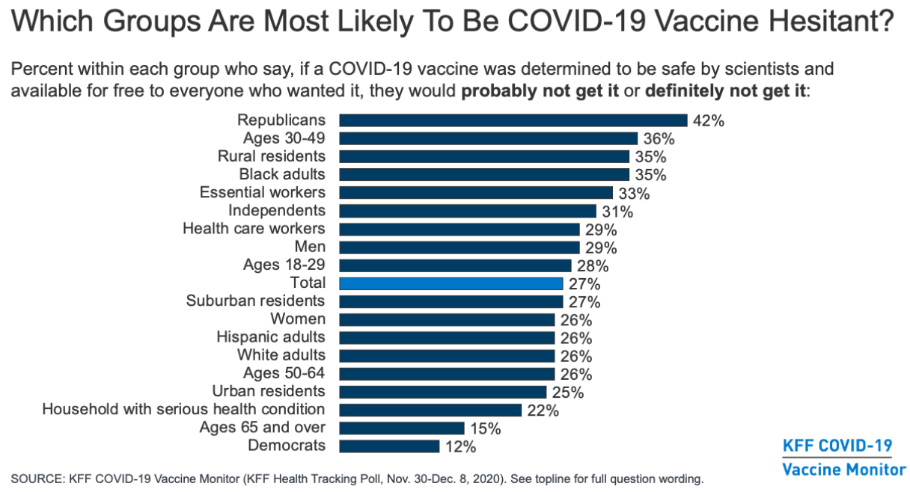

How do the COVID-19 vaccination rates vary among pregnant people aged 18-49 change from Q4 2022 to Q4 2023 and by race/ethnicity?
Intended audience
Public health officials who will make decision on which group to prioritize for COVID-19 vaccination campaign targeting pregnant people.
Data sources
This dataset comes from the Center for Disease Control and Prevention (CDC) - National Center for Immunization and Respiratory Diseases (NCIRD). It includes estimates on COVID-19 vaccination for pregnant persons, overall and by race and ethnicity based on data from the Vaccine Safety Datalink [1].
── Attaching core tidyverse packages ──────────────────────── tidyverse 2.0.0 ──
✔ dplyr 1.1.4 ✔ readr 2.1.5
✔ forcats 1.0.0 ✔ stringr 1.5.1
✔ ggplot2 3.5.1 ✔ tibble 3.2.1
✔ lubridate 1.9.3 ✔ tidyr 1.3.1
✔ purrr 1.0.2
── Conflicts ────────────────────────────────────────── tidyverse_conflicts() ──
✖ dplyr::filter() masks stats::filter()
✖ dplyr::lag() masks stats::lag()
ℹ Use the conflicted package (<http://conflicted.r-lib.org/>) to force all conflicts to become errors
library(ggplot2)# Import datasetwd("C:/Users/nhidi/OneDrive - Johns Hopkins/PhD/courses/second-term/Programming/project1")dat <-read.csv("covid-19-pregnant.csv")# Filter dataset to only contains timeframe with data from all grouptable(dat$Date.Order, dat$Race.and.Ethnicity)df <- dat %>% dplyr::filter(Date.Order !=90)# Change date to correct formatdf$Week_Ending_Date <-as.Date(df$Week_Ending_Date, format ="%m/%d/%Y %H:%M:%S")str(df$Week_Ending_Date)# Summarized data of average vaccination rate by race/ethnicity groupdf_sum <- df %>%group_by(Race.and.Ethnicity) %>%summarise(n =n(),average =mean(Percent.Up.to.date, na.rm =TRUE) )df_sum <- df_sum %>%arrange (desc(average))df_sum_minus_all <- df_sum %>%filter(Race.and.Ethnicity!="All Races/Ethnicity")df_sum <- df_sum %>%arrange (desc(average))# Summarized data of average denominator by race/ethnicity groupdf_denominator <- df %>%group_by(Race.and.Ethnicity) %>%summarise(n =n(),size =mean(Denominator, na.rm =TRUE) ) %>%filter(Race.and.Ethnicity!="All Races/Ethnicity")
Sub data-frame is generated to create visualization
Data visualization
#Chart through timeplot1 <-ggplot(data = df, aes(x=Week_Ending_Date, y=Percent.Up.to.date, group=Race.and.Ethnicity, color=Race.and.Ethnicity)) +geom_line() +ggtitle("COVID-19 vaccination among pregnant people aged 18-49 (2022-2023)") +xlab("Month") +ylab("Average vaccination rate (%)") +theme_bw() +labs(caption ="Fig 1. COVID-19 vaccination among pregnant people across all races and ethnicitiy (2022-2023)")plot1

plot2 <-ggplot(df, aes(Week_Ending_Date, Percent.Up.to.date)) +geom_point() +facet_wrap(vars(Race.and.Ethnicity)) +ggtitle("COVID-19 vaccination among pregnant people aged 18-49 (2022-2023)") +xlab("Month") +ylab("Average vaccination rate (%)") +theme_bw() +labs(caption ="Fig 2. COVID-19 vaccination among pregnant people by races and ethnicitiy (2022-2023)")plot2

#Box plotplot3 <-ggplot(df, aes(Race.and.Ethnicity, Percent.Up.to.date)) +geom_boxplot(outlier.colour ="red", outlier.shape =1) +theme_bw() +ggtitle("COVID-19 vaccination among pregnant people aged 18-49") +xlab("Race & Ethnicity") +ylab("Average vaccination rate (%)") +labs(caption ="Fig 3. COVID-19 vaccination among pregnant people across all races and ethnicitiy (2022-2023)")plot3

#Bar chartplot4 <-ggplot(data = df_sum, aes(x=Race.and.Ethnicity, y=average, fill=Race.and.Ethnicity)) +geom_bar(stat="identity") +theme_bw() +ggtitle("COVID-19 vaccination among pregnant people aged 18-49") +xlab("Race & Ethnicity") +ylab("Average vaccination rate (%)") +theme(legend.position="none") +labs(caption ="Fig 4. Average COVID-19 vaccination among pregnant people, by races and ethnicitiy (2022-2023)")plot4

Table/Image
Screenshot from KFF COVID-19 Vaccine Monitor

Important
Our results align with findings from KFF’s poll on which groups to most likely be COVID-19 Vaccine hesitant [2]
Results
The COVID-19 vaccination rates among pregnant people (aged 18-45) across all races and ethnicities increased from 2022 to 2023 (Figures 1), with most groups increased sharply from September 2022 to January 2023, then even out. However, as of summer 2023, the average vaccination rate is still low, only at around 16%. Figure 4 summarizes the average COVID-19 vaccination rates of all races/ethnicitity groups during this time frame. Asian is the race group that has the highest vaccination rate, at around 23 %, higher than the national average at around 12.5%. The vaccination rate is lowest among Black population, only at around 5%. This finding aligns with the results from KFF COVID-19 Vaccine Monitor, which shows that 35% of Black adults expressed hesitancy toward COVID-19 vaccination [2]. History of racial discrimination in healthcare and medical research as well as in the criminal justic system may contribute to COVID-19 vaccine hesitancy among Black adults [3]. Public health officials should listen to concerns about COVID-19 vaccination from this population and address them with cultural appropriate health communication messages.
Reference
Warning
Not sure why my References do not show up here…you will still find my .bib file on github. Here is a photo of my cat, Oli, instead. He wants me to do yoga and relax.